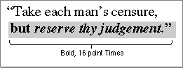
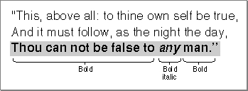
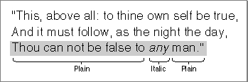

Legacy Document
Important: The information in this document is obsolete and should not be used for new development.
Important: The information in this document is obsolete and should not be used for new development.


Text Attributes
This section describes how your application can check the current attributes of a range of text to determine which ones are consistent across the text. It also describes how you can manipulate the font, style, size, and color of a range of text; the text selection can consist of a segment of text, the entire text of the edit record, a single character, or even an insertion point.You use the
TEContinuousStylefunction to determine the current attributes for a range of text, and you use theTESetStyleprocedure to change them. You can change character attributes singly, collectively, or in any combination usingTESetStyle. For example, you can change the font style to bold or italic, and you can underline, outline, or shadow the selected text. You can increase or decrease the type size incrementally, or change the color in which the text is displayed. You use theTESetAlignmentprocedure to change the alignment of the entire text of an edit record.This section describes these tasks in this order:
Some general information about
- checking the text attributes across a selection range
- toggling an attribute
- handling a font menu that lets the user change the font family
- handling a font size menu that lets the user change the text size
- handling a style menu that lets the user change the style of the text
- changing the text alignment
TESetStylethat applies to many of the tasks for which you can use it is discussed here. If you callTESetStylefor an insertion point, TextEdit stores the input character attribute information in the null scrap's style scrap record. If the user then enters text (pastes without attributes, inserts, or types it), the attributes are written to the style record and applied to that text.There are many ways in which you can use
TESetStyleto handle menu commands that let the user modify text attributes. If your application allows a user to change any or all the text attributes from a single format menu before redrawing the text, you can make one call toTESetStylespecifying the particular attributes to be changed. If your application provides separate menus to let a user manipulate different aspects of the text, you can make separate calls toTESetStylespecifying the discrete text attribute to be changed.
The value of
- Note
- A field in the text style record is only valid if the corresponding bit is set in the
modeparameter; otherwise, the field contains invalid information.
modespecifies which existing character attributes are to be changed to the new character attributes specified bynewStyle.
Constant Value Description doFont 1 Sets the font family ID doFace 2 Sets the character style doSize 4 Sets the type size doColor 8 Sets the color doAll 15 Sets all attributes addSize 16 Increases or decreases the type size doToggle 32 Modifies the mode Checking the Text Attributes Across a Selection Range
When a particular attribute is set for an entire selection range, that attribute is said to be continuous over the selection. For example, in the selected text in Figure 2-10, the bold attribute is continuous over the selection range and italic is not.Figure 2-10 Continuous attributes over a selection range
 To determine the actual values for continuous attributes, you can use the
TEContinuousStylefunction. This function takes two variable parameters:modeandaStyle. For its input value,modespecifies the attributes to be checked; for its output value,modespecifies those attributes that are continuous over the selection range. For the input value ofaStyle, you pass a pointer to a text style record (of typeTextStyle); for those attributes that are continuous, the text style record fields contain the actual values whenTEContinuousStylereturns.A field in the text style record is only valid if the corresponding bit is set in the
modeparameter; otherwise, the field contains invalid information. Possible values for theTEContinuousStylemodeparameter are defined by the following constants.
Constant Value Description doFont 1 Specifies the font family number doFace 2 Specifies the character style doSize 4 Specifies the type size doColor 8 Specifies the color doAll 15 Specifies all the attributes Listing 2-9 illustrates how to use the
TEContinuousStylefunction to determine the font, style, size, and color of the current selection range. The code sets themodeparameter. Then it callsTEContinuousStyle, passing it the text style record. WhenTEContinuousStylereturns, it checks each bit of themodeparameter to see which attributes are continuous across the selection.Listing 2-9 Determining the font, style, size, and color of the current selection range
PROCEDURE MyGetCurrentSelection (VAR mode: Integer; VAR continuous: Boolean; VAR astyle: TextStyle; myTERec: TEHandle); BEGIN mode := doFont + doFace + doSize + doColor; continuous := TEContinuousStyle(mode, aStyle, myTERec); IF BitAnd(mode, doFont) <> 0 THEN {font for selection = aStyle.tsFont} ELSE {more than one font in selection}; IF BitAnd(mode, doFace) <> 0 THEN {aStyle.tsFace contains the text faces (or plain) that } { are common to the selection.} ELSE {No text face is common to the entire selection.}; IF BitAnd(mode, doSize) <> 0 THEN {size for selection = aStyle.tsSize} ELSE {more than one size in selection}; IF BitAnd(mode, doColor) <> 0 THEN {color for selection = aStyle.tsColor} ELSE {more than one color in selection} END;Toggling an Attribute
Once you know what attributes are continuous across a selection range, you can useTESetStyleto toggle an attribute on and off. For example, if you specify amodeparameter forTESetStylethat includes bothdoToggleanddoFace, and an attribute that has been set in thetsFacefield of the text style record exists across the current selection range, thenTESetStyleremoves that attribute. However, if the attribute isn't continuous over the current selection, then all of the selected text is set to include it.For example, in the selected text shown in Figure 2-11, the bold style is continuous over the selection range and the italic style is not.
Figure 2-11 An initial selection before
TESetStyleis called If you call
TESetStylewith amodeofdoFace+doToggleand a text style record parameter with itstsFacefield set tobold, the resulting selection is no longer bold, as shown in Figure 2-12.Figure 2-12 The result of calling
TESetStyleto toggle to bold On the other hand, if instead you call
TESetStylewith amodeofdoFace+doToggleand a text style record with itstsFacefield set toitalic, the resulting selection is all bold italic as shown in Figure 2-13.Figure 2-13 The result of calling
TESetStyleto toggle italicsHandling a Font Menu
You can useTESetStyleto handle a Font menu that allows the user to change the font family for a text selection. The user might select the entire text of an edit record or a portion of it, then choose a different font family from your menu to be used to render the text. Listing 2-10 shows how to handle a Font menu that allows the user to do this. The code determines which font the user has selected from the menu. Next, it calls the Font Manager'sGetFNumprocedure to get the font family ID for the font of the selected text. Then it callsTESetStylepassing it the text style record with thetsFontfield set to the font ID. Because theredrawparameter is set toTRUE, the current selection range is redrawn immediately in the new font.Listing 2-10 Handling the Font menu
PROCEDURE MyHandleFontMenu (myWindow: WindowPtr; myTERec: TEHandle; menuItem: Integer); VAR txStyle: TextStyle; {holds style selected} fontName: Str255; {name of font selected} fontID: Integer; {ID of font selected} BEGIN GetItem(GetMenuHandle(mFont), menuItem, fontName); GetFNum(fontName, fontID); txStyle.tsFont := fontID; TESetStyle(doFont, txStyle, true, myTERec); MyAdjustScrollBars(window, FALSE); END;Handling a Font Size Menu
If your application includes a menu that allows users to change the font size of the selected text, you can use theTESetStyleprocedure to handle this modification. The code in Listing 2-11 sets thetsSizefield of the text style record to the font size that the user selects; then it callsTESetStyleto apply the new font size immediately. ThedoSizemode parameter value forces all the text to the new size.Listing 2-11 Handling the Size menu
PROCEDURE MyHandleSizeCommand (myTERec: TEHandle; menuItem: Integer); VAR txStyle: TextStyle; BEGIN MyGetSize(GetMenuHandle(mSize), menuItem, sizeChosen); txStyle.tsSize := sizeChosen; TESetStyle(doSize, txStyle, TRUE, myTERec); MyAdjustScrollBars(window, FALSE); END;Handling a Style Menu
Your application can also useTESetStyleto handle Style menu commands. For example, you can set themodeparameter todoFaceand set thetsFacefield of the text style record to any of the font attributes that the user selects. If your menu supports a Plain option to remove all attributes from the text selection, you need to explicitly settsFace. Because of the behavior ofTESetStyle, you cannot implement a Plain selection by passing a null (empty set) text style record to remove the current attributes. Listing 2-12 shows how to useTESetStyleto change the text attributes, including how to render plain text.Listing 2-12 Handling a Style menu
PROCEDURE MyHandleStyleMenu (myWindow: WindowPtr; myTERec: TEHandle; menuItem: Integer); VAR txStyle: TextStyle; anIntPtr: Integer; BEGIN {mStyle} WITH txStyle DO BEGIN CASE menuItem OF plainItem: BEGIN anIntPtr := @txStyle.tsFace; anIntPtr^ := 0; tsFace := []; END; boldItem: tsFace := [bold]; italicItem: tsFace := [italic]; underlineItem: tsFace := [underline]; outlineItem: tsFace := [outline]; shadowItem: tsFace := [shadow]; END; {case} IF menuItem <> 1 THEN TESetStyle(doFace + doToggle, txStyle, TRUE, myTERec) {if we don't select plain then use doToggle} ELSE TESetStyle(doFace, txStyle, TRUE, myTERec); {TESetStyle has problems with plain and doToggle } { has no effect!so we need to special case it.} MyAdjustScrollBars(window, FALSE); END; END;If you setredrawtoTRUE, TextEdit redraws the current selection with the new attributes, recalculating line breaks, line heights, and font ascents. If you callTESetStylewith a value ofFALSEfor theredrawparameter, TextEdit does not redraw the text or recalculate line breaks, line heights, and font ascents until the next update event occurs. Consequently, when your application calls a routine that uses any of this information, such asTEGetHeight(which returns a total height between two specified lines), the routine uses the old character attribute information that existed before you calledTESetStyleto change it. To be certain that the new information is always reflected immediately, call theTESetStyleprocedure with aredrawparameter ofTRUE.Listing 2-13 shows a sample procedure that calls
TEContinuousStyleto check the character attributes of the current selection range; it determines whether the style is plain, bold, or italic. For each style that is continuous across the text, theMyAdjustStyleNewprocedure marks the item on the style menu. In this case, ifTEContinuousStylereturns amodeparameter that containsdoFaceand the text style recordtsFacefield is bold, it means that the selected text is all bold, but may contain other text styles, such as italic, as well. Italic does not apply to all of the selected text, or it would have been included in thetsFacefield. If thetsFacefield is an empty set, then all of the selected text is plain.Listing 2-13 Checking the style and marking Style menu items to reflect
the current selection range
PROCEDURE MyAdjustStyleNew (myTERec: TEHandle); VAR styleMenu: MenuHandle; aStyle: TextStyle; mode: Integer; BEGIN mode := doFace; styleMenu := GetMenuHandle(mStyle); IF TEContinuousStyle(mode, aStyle, myTERec) THEN BEGIN {There is at least one style that is continuous over } { the selection. Note that it might be plain, which is } { actually the absence of all styles.} CheckItem(styleMenu, plainItem, aStyle.tsFace = []); CheckItem(styleMenu, boldItem, bold IN aStyle.tsFace); CheckItem(styleMenu, italicItem, italic IN aStyle.tsFace); {Set other menu items appropriately.} END ELSE BEGIN {No text face is common to the entire selection.} CheckItem(styleMenu, plainItem, FALSE); CheckItem(styleMenu, boldItem, FALSE); CheckItem(styleMenu, italicItem, FALSE); {Set other menu items appropriately.} END; END;Changing the Text Alignment
Your application can change the alignment of the entire text of an edit record by calling theTESetAlignmentprocedure. The default alignment used to display the text of an edit record is based on the primary line direction of the system script. For example, when the system script is Arabic or that of any language that is read from right to left, the default line direction is right to left and the text is right aligned.For a script system whose primary line direction is right to left, you can force left alignment of the text by specifying
teFlushLeftas the value of thealignparameter, as shown in the following example:
TESetAlignment (teFlushLeft, myTERec);You can use any of the following constants to specify how text is aligned.
Constant Description teFlushDefault Default alignment according to the primary line direction teCenter Center for all scripts teFlushRight Right for all scripts teFlushLeft Left for all scripts Make sure that you call the Window Manager's
InvalRectprocedure after you change the alignment so the text is redrawn with the new alignment. For more information aboutInvalRect, see the chapter "Window Manager" in Inside Macintosh: Macintosh Toolbox Essentials.